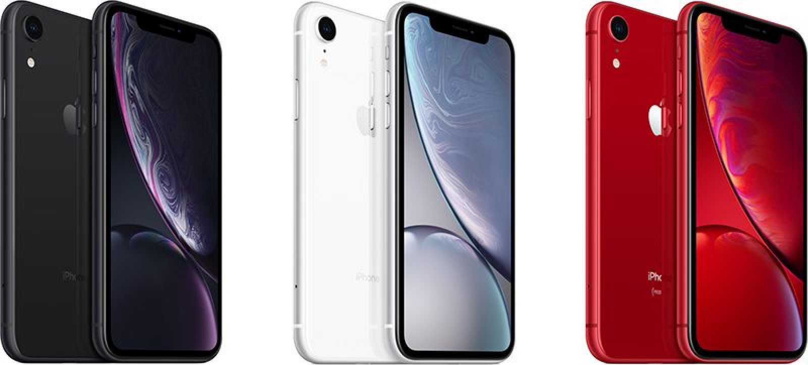

iPhone description
</titl
<body>
<h1>iPhone XR</h1>

<div class="bare">
Apple's iPhone XR, introduced on September 12, 2018, is the company's lower-cost flagship device that's being sold alongside the iPhone XS and the iPhone XS Max.
Apple's goal with the $749 iPhone XR is to reach as many customers as possible with its latest technology, so the iPhone XR adopts many features from the iPhone XS and XS Max while also compromising in some areas to keep costs down.
The iPhone XR features a precision-machined 7000 Series aerospace-grade aluminum frame that wraps around an all-glass enclosure with the same durable glass used in the iPhone XS. Apple has designed the iPhone XR in six colors: white, black, blue, coral, yellow, and (PRODUCT)RED.
With the glass body, Qi-based wireless charging is supported, and the device features IP67 water resistance for keeping it safe from splashes and spills. iPhone XR features a larger display than iPhone 8 Plus, but in a smaller body that falls between the 5.8-inch iPhone XS and the 6.5-inch iPhone XS Max.
Apple designed a new "Liquid Retina" display for the iPhone XR, which is a 6.1-inch LCD with a 1792 x 828 resolution that spans from edge-to-edge and top to bottom with minimal bezels. As with the iPhone XS, there is no Home button on the iPhone XR and it adopts the swipe-based navigation system introduced in the iPhone X.
Apple calls the Liquid Retina display the most advanced LCD ever in a smartphone with support for 120Hz touch sensing, Tap to Wake, and wide color. It supports True Tone to match the white balance of the display to the ambient lighting in the room, and Apple says it has impressive color accuracy.
The new LCD does not support 3D Touch, but Apple has introduced a new Haptic Touch feature to provide haptic responses to certain gestures on the device as a replacement.
Instead of Touch ID, the iPhone XR uses the same TrueDepth camera system that's in the iPhone XS with faster, more efficient Face ID facial recognition for unlocking your device, making Apple Pay payments, and more.
Inside, the iPhone XR is sporting a 7-nanometer A12 Bionic chip that includes two-performance cores 15 percent faster than the A11 and four efficiency cores up to 50 percent more efficient. The four-core GPU in the A12 is up to 50 percent faster than the A11.
A next-generation 8-core Neural Engine completes up to 5 trillion operations per second for major improvements to all apps and features that use AR and machine learning.
iPhone XR does not use the dual-lens camera system in the iPhone XS, instead adopting a single-lens rear camera, but Apple has made software advances to make it nearly as functional as the dual-lens camera in the more expensive iPhone XS models.
It features an f/1.8 12-megapixel wide-angle lens with a 32 percent larger sensor for sharper, more detailed pictures in low light, which is in fact the same wide-angle camera used in the iPhone XS. The camera supports optical image stabilization, improved True Tone Flash, and it has twice as many focus pixels.
Through software, Apple has enabled Portrait Mode in the iPhone XR, a feature previously limited to dual-lens cameras. Portrait Mode allows users to take DSLR-quality images with artful background blur that focuses the image on the subject of the photo. Advanced bokeh for better blur and Depth Control have also been introduced, allowing for the depth of field of a photo to be adjusted after it's captured.
Smart HDR brings out more detail in highlights and shadows even in situations where lighting conditions are poor, and wide color support results in rich, colorful photographs.
At the front, the 7-megapixel TrueDepth camera enables all of the features that are available in the more expensive iPhone XS, including Portrait Mode, Portrait Lighting, Depth Control, and more, for what Apple says are the "best selfies you've ever taken."
</div>
</body>
</html>